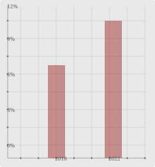

Scroll, kijk, repeat
Wie bepaalt er echt waar jou aandacht naartoe gaat? Jij?... Denk opnieuw.
- 99+ NIEUW
- JE MIST IETS
- BLIJF HIER
- NIET WEGGAAN
- NU TRENDING
- NOTIFICATIE
- CLICKBAIT
- 12+ GEMIST
- LAATSTE KANS
- 28+ REACTIES
- IEMAND TYPT...
- 99+ LIKES
- 102+ MELDINGEN
- LIVE
- 2.4K KIJKEN MEE
- ER GEBEURT IETS
- KOM TERUG
- 45+ GEMIST
- 387 MENSEN ACTIEF
ONTSNAP
Get off social media,
Get into the world.
Ga van je telefoon af, ga de echte wereld in.
En vooral social media. Waarom verspil je je leven?
Neem een kijkje in je schermtijd. Hoe accepteer je dit?
Jij weet eigenlijk al hoe dat komt.
Je denkt dat je er zo mee kunt stoppen en iets anders kunt gaan
doen. Maar diep van binnen besef je de realiteit. Dat je niet kunt
stoppen. Je hebt het niet onder controle.
Het lijkt alsof een onderbewuste kracht het aanstuurt. In de
realiteit is het niet zo mythologisch als dat het klinkt.
In de realiteit is het je nucleus die gekaapt is. Je
gewoontecircuits in je hersenen die het hebben aangeleerd. En dus
hoef je er niet bij na te denken en gebeurt het gewoon. Je pakt
tijdens het eten je telefoon er gewoon automatisch bij.
Maar ik geloof dat het anders kan.

Problematisch social media gebruik stijgt..
Van 2018 tot 2022 is problematisch social media gebruik gestegen onder jongeren.1
Blijf hier
Er valt nog zo veel te beleven hier, waarom zou je weggaan?
- IEDEREEN PRAAT EROVER
- HEB JE DIT GEZIEN?
- MIS NIETS
- DIT WIL JE WETEN
- KIJK SNEL
- ER IS MEER
- JE LOOPT ACHTER
- 99+ REACTIES
- JE BENT GETAGD
- 387 MENSEN ACTIEF
- 27+ MENSEN ONLINE
- 92+ LIKES
MANIFEST